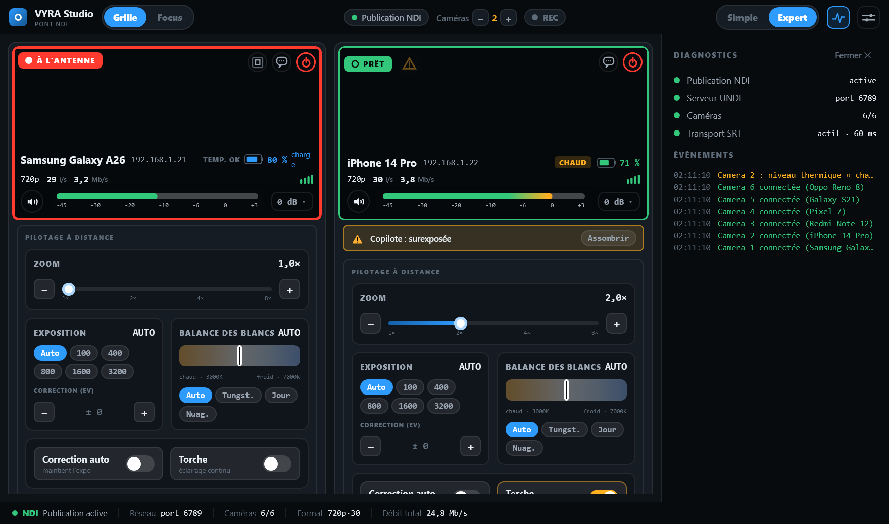
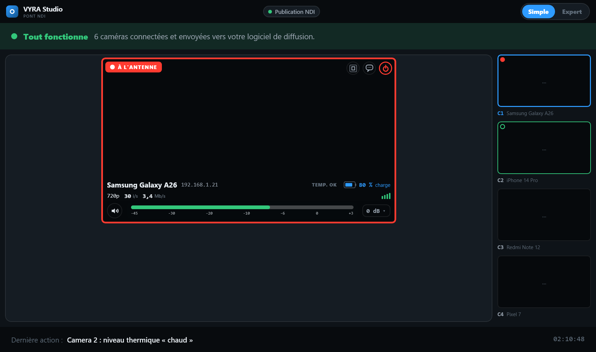
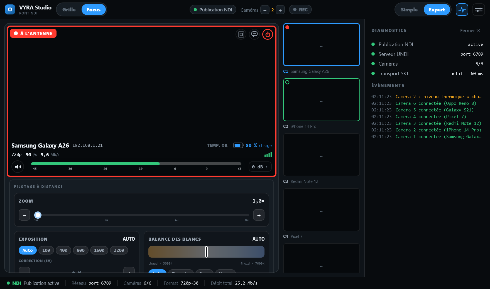
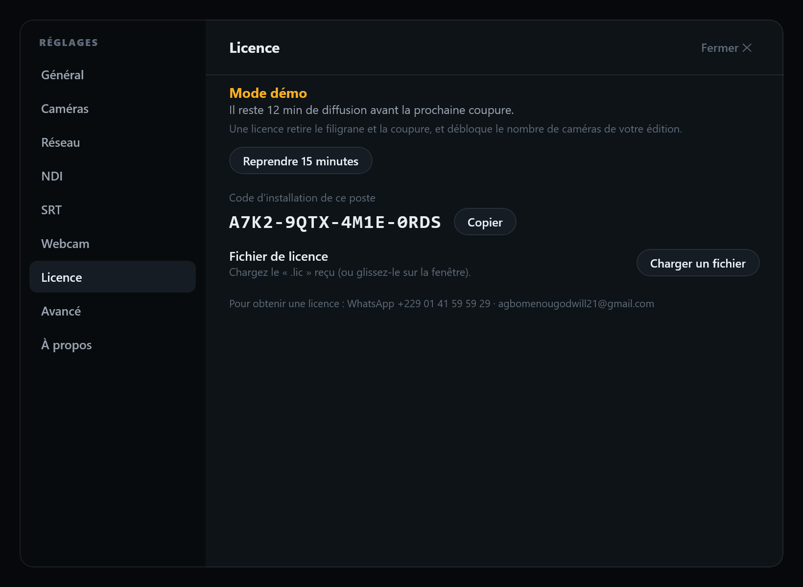
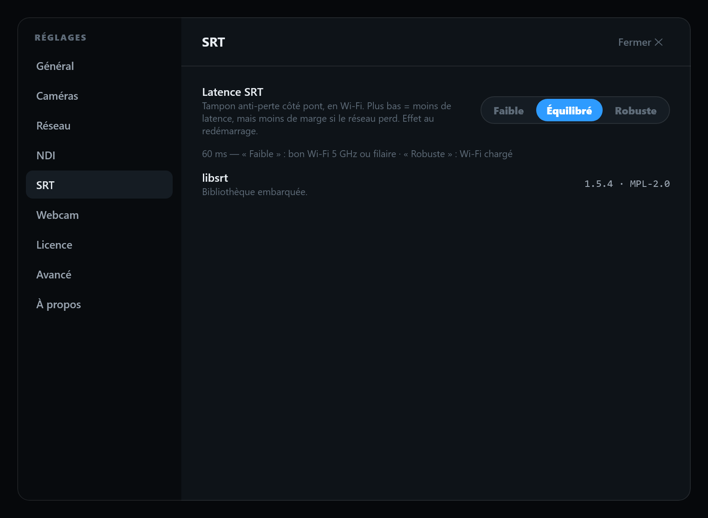
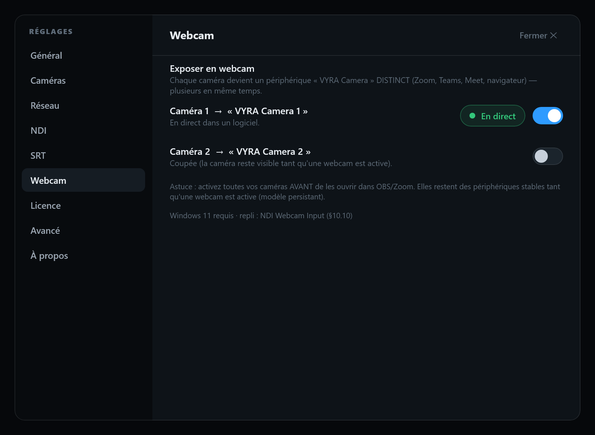
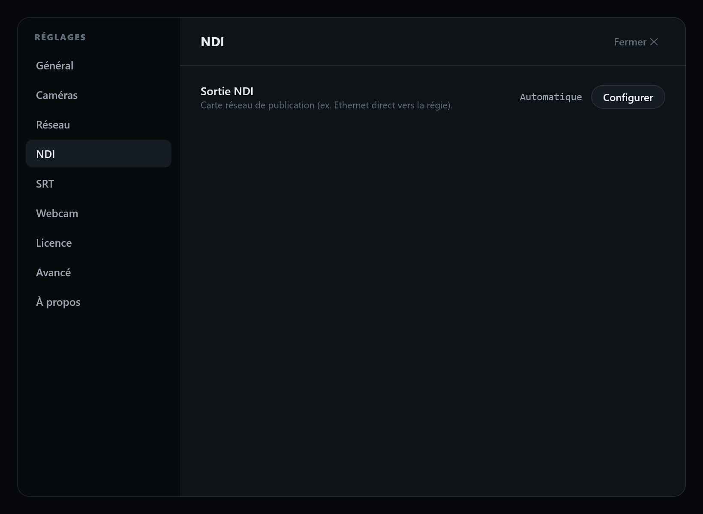

Vos téléphones deviennent
les caméras de votre régie.
VYRA Camera transforme les téléphones que vous possédez déjà en caméras. VYRA Studio les réunit sur votre ordinateur et les envoie vers OBS, vMix ou votre mélangeur — sans acheter de caméras.
Gratuit à l'essai (mode démo) · Windows 10/11 · Android 8+

Une régie complète, à partir de téléphones.
Jusqu'à 4 caméras
Plusieurs téléphones filment en même temps, réunis sur un seul ordinateur.
NDI & SRT
Envoi direct vers OBS, vMix ou votre mélangeur en NDI, ou sur Internet en SRT.
Pilotage à distance
Zoom, exposition, son et coupure de chaque caméra, réglés depuis l'ordinateur.
Auto-cadrage
La caméra suit le sujet et recadre la sortie automatiquement (édition Pro).
100 % hors ligne
Aucune connexion Internet requise pour filmer. Aucune donnée envoyée.
Fiable en direct
Débit adaptatif, reconnexion automatique, gestion de la chauffe des téléphones.
Opérationnel en trois étapes.
Installez VYRA Studio
Sur l'ordinateur de la régie (Windows 10/11). Rien d'autre à configurer.
Ouvrez VYRA Camera
Sur chaque téléphone, connecté au même Wi-Fi. Les caméras apparaissent toutes seules.
Diffusez
Envoyez vers OBS, vMix ou un mélangeur en NDI, ou sur Internet en SRT.
Une régie claire, pensée pour le direct.
Captures réelles de VYRA Studio. Chaque caméra est pilotable ; tout est lisible d'un coup d'œil.






Une licence, à vie. Par ordinateur.
Paiement unique, pas d'abonnement. Essayez gratuitement avant d'acheter.
- ✓ Produit complet, 2 caméras
- ✓ Auto-cadrage + SRT
- • Filigrane à l'image
- • Coupure à 15 min
- ✓ 1 caméra, sans filigrane
- ✓ Sortie NDI
- ✕ Auto-cadrage
- ✕ Sortie SRT
- ✓ 2 caméras simultanées
- ✓ Sortie NDI
- ✓ Sortie SRT (Internet)
- ✕ Auto-cadrage
- ✓ 4 caméras simultanées
- ✓ NDI + SRT
- ✓ Auto-cadrage
- ✓ Tout VYRA, sans limite
Comment acheter : payez votre édition via FedaPay (Mobile Money ou carte) → envoyez votre « code du poste » par WhatsApp / e-mail → recevez votre fichier de licence et activez-le hors ligne.
Tout ce qu'il faut savoir.
Faut-il acheter des caméras ?+
Ai-je besoin d'Internet pour filmer ?+
Combien de caméras puis-je utiliser ?+
Comment fonctionne la licence ?+
Que contient la version de démonstration ?+
Puis-je l'utiliser avec OBS ou vMix ?+
Comment se fait le paiement ?+
Et si je change d'ordinateur ?+
Essayez avant de payer.
La démo est le produit complet. Installez-la, filmez un vrai culte, puis demandez votre licence.